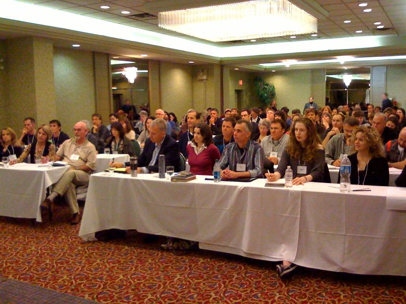
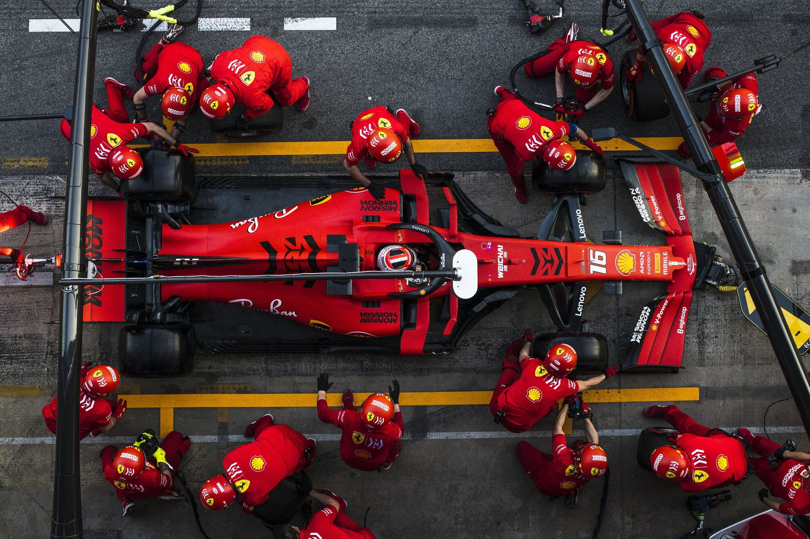
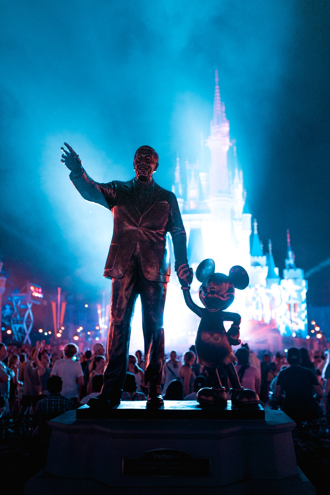
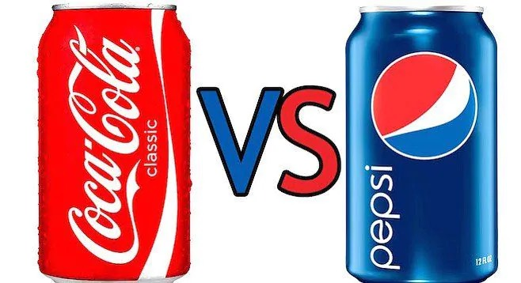
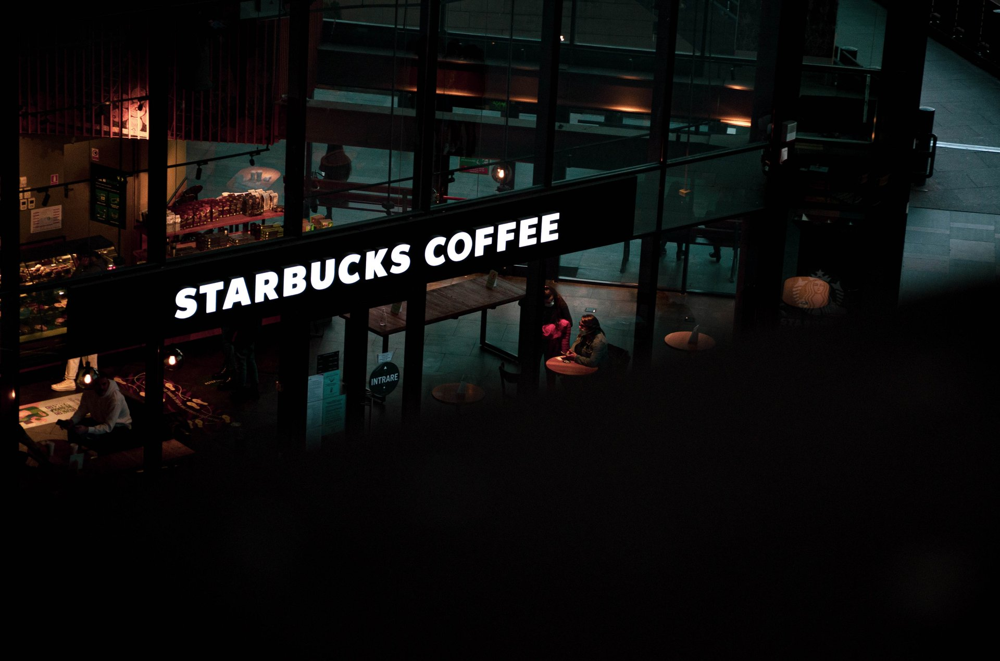

Tality Wellness
// franchisee retreat · 2026
Just for now.
// I'm the parking attendant. Marking your tires.








01
Alignment tool.

02
Decision-making tool.

01
Not a slogan or tagline.

// for
Tality Wellness
Thank you.
Now go fill some cups.
Strategy with a pulse.
nick@nickbanksconsulting.com
/
nickbanksconsulting.com
/
778.987.5230